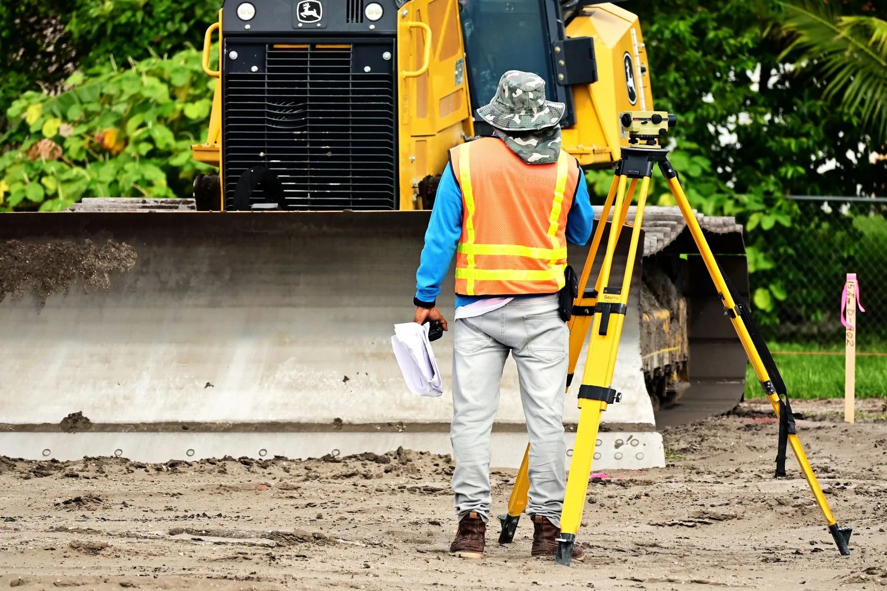
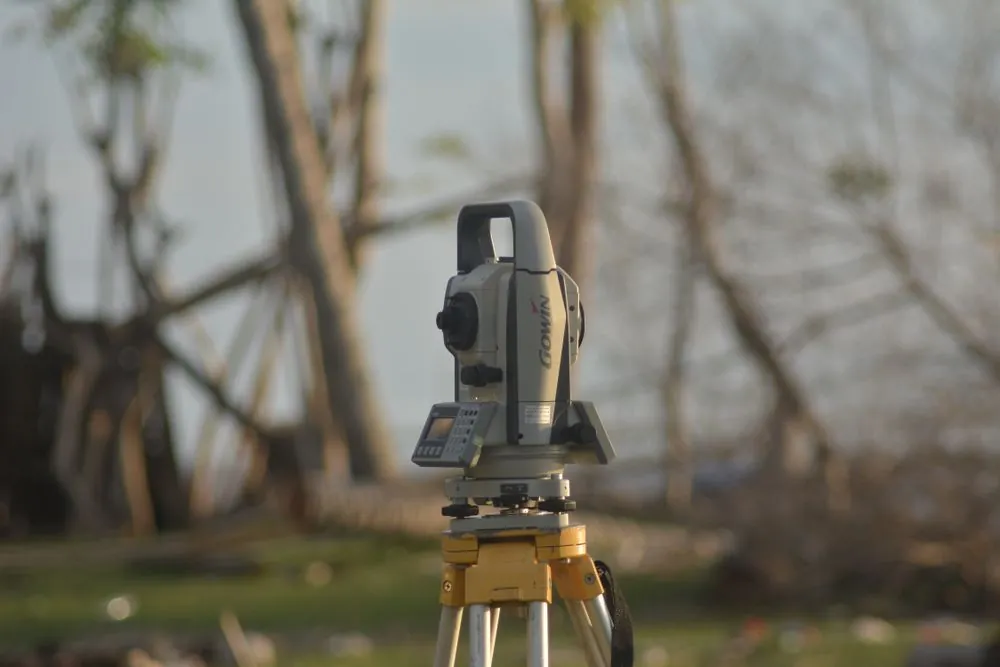
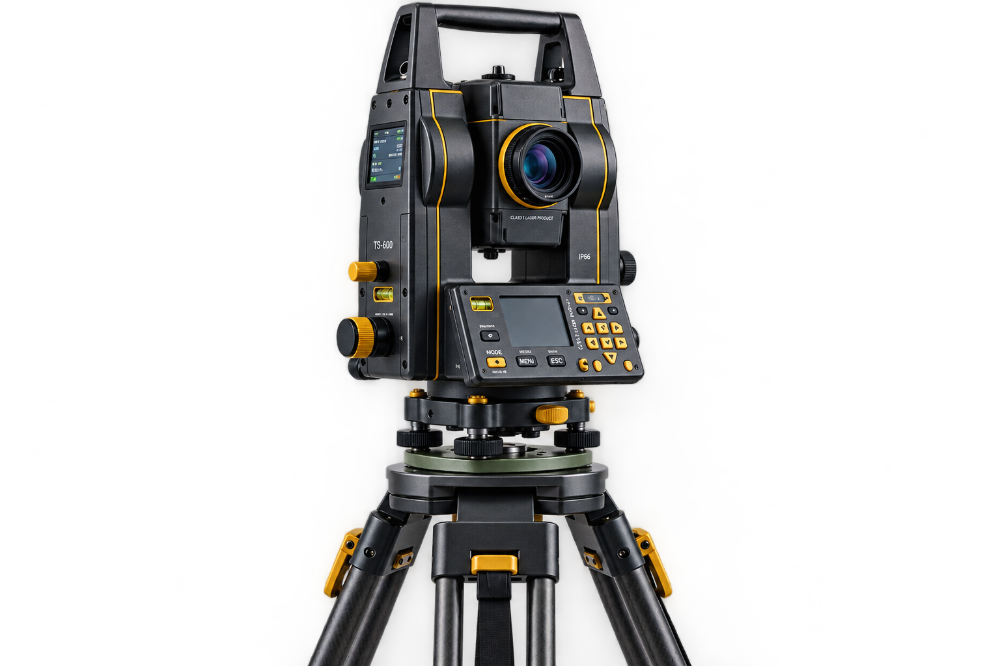
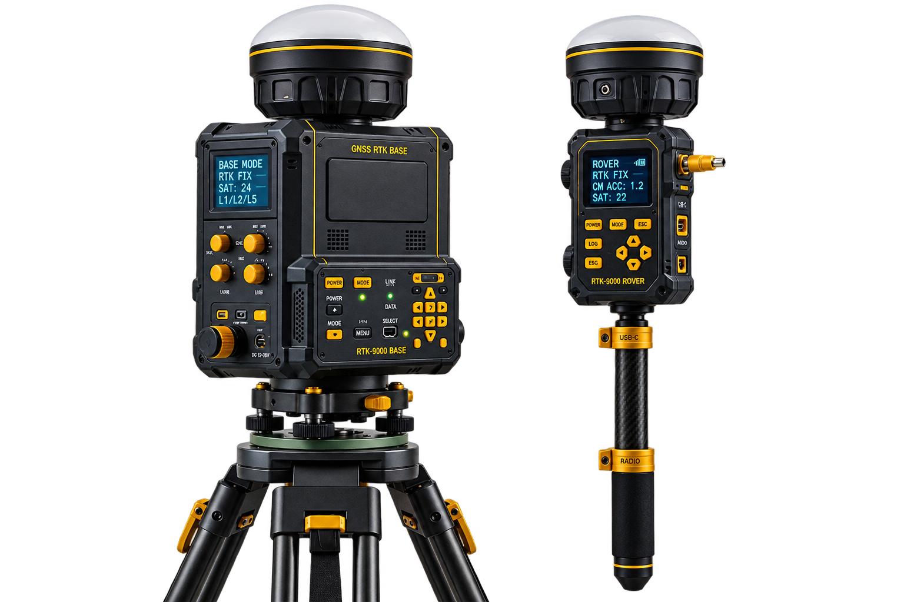
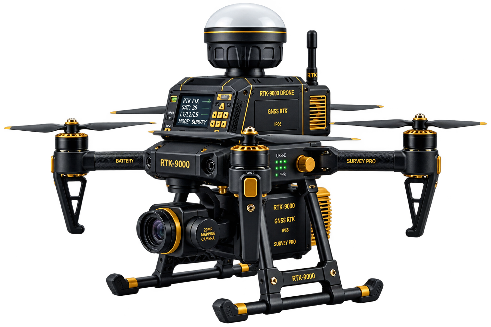

01
Levantamientos topográficos
Medición planimétrica y altimétrica con Estación Total y GNSS Diferencial RTK. Una lectura detallada de tu terreno.
Cotizar servicio
TU PROYECTO EMPIEZA CON PRECISIÓN
Ingeniería topográfica y geomática para llevar tu proyecto del primer punto al siguiente nivel.
01 / NUESTROS SERVICIOS
Información del terreno para diseñar, construir y avanzar con seguridad. Soluciones técnicas a la medida de cada etapa de tu proyecto.
Medición planimétrica y altimétrica con Estación Total y GNSS Diferencial RTK. Una lectura detallada de tu terreno.
Cotizar servicioPosicionamiento y puntos de control georreferenciados para vincular el trabajo de campo con el sistema de referencia del proyecto.
Cotizar servicioVuelos RPA para obtener ortofotos y modelos del terreno. Una perspectiva completa para analizar y planificar.
Cotizar servicioTraslado de ejes, niveles y puntos de diseño al terreno. Acompañamiento topográfico durante la ejecución de obras civiles.
Cotizar servicioBase topográfica, delimitación y organización de lotes para la planificación técnica de proyectos urbanos.
Cotizar servicioModelado de superficies, cálculo de corte y relleno y seguimiento de volúmenes para la gestión de tu obra.
Cotizar servicio
02 / SOMOS TOP PASQUEL
Somos una empresa de ingeniería topográfica y geomática con base en Puerto Bermúdez, en el corazón de la Selva Central.
Combinamos tecnología de medición con experiencia en campo para transformar el terreno en información exacta, útil y confiable para constructoras, municipalidades, ingenieros, arquitectos y propietarios.
03 / TECNOLOGÍA QUE HACE LA DIFERENCIA
Seleccionamos la metodología y el equipo según el alcance, las condiciones del terreno y la precisión que exige tu proyecto.

+Ángulos, distancias, ejes y niveles para levantamientos y replanteos de obra.
CONTROL EN CADA PUNTO 01
+Coordenadas y georreferenciación con correcciones en tiempo real.
CONEXIÓN CON EL TERRITORIO 02
+Fotogrametría y registro aéreo para interpretar superficies y extensiones.
UNA PERSPECTIVA COMPLETA 0304 / PROYECTOS Y APLICACIONES
Explora cómo aplicamos la topografía en diferentes necesidades. Casos ilustrativos e imágenes referenciales de cada servicio.
3 aplicaciones disponibles.
05 / NUESTRA COBERTURA
Nuestra base está en Puerto Bermúdez, Pasco. Atendemos proyectos en la Selva Central y coordinamos servicios en todo el Perú.

RESOLVEMOS TUS DUDAS
Todo empieza por entender lo que tu proyecto necesita.
Indícanos la ubicación, el tipo de servicio, el área aproximada y el objetivo del trabajo. Si tienes planos o referencias del terreno, puedes compartirlos al coordinar la atención.
Sí. Nuestra base está en Puerto Bermúdez y atendemos la Selva Central. También coordinamos trabajos a nivel nacional, definiendo previamente el alcance, acceso y logística.
Los entregables se acuerdan según el servicio: planos, listado de coordenadas, curvas de nivel, modelos de terreno, ortofotos o informes técnicos, en los formatos definidos en la propuesta.
El plazo depende del área, la accesibilidad, la cobertura vegetal, las condiciones de trabajo y el detalle requerido. La propuesta establece el cronograma de campo y gabinete.
06 / CONVERSEMOS DE TU PROYECTO
Cuéntanos qué necesitas. Prepara una solicitud con los datos de tu terreno y da el primer paso.